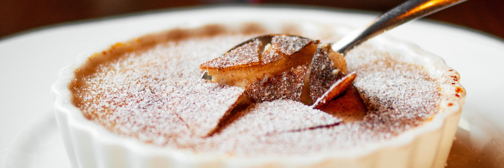
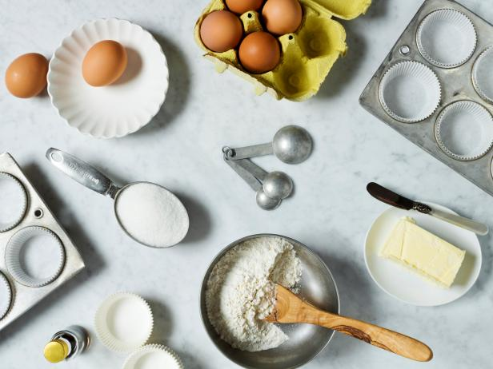
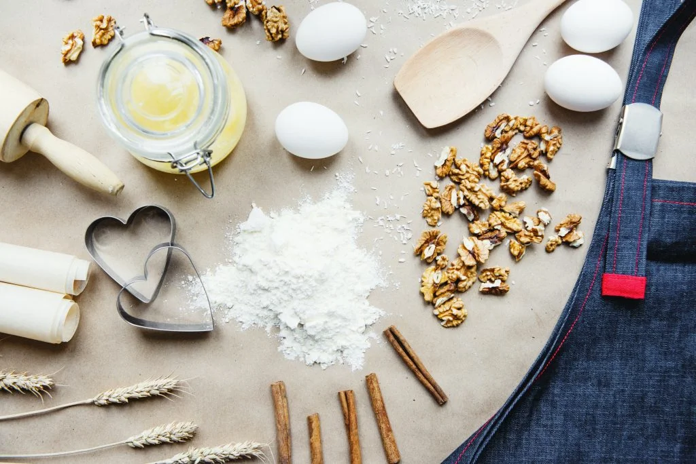

Tips & Techniques

Enhance your baking prowess with these valuable tips and techniques. Whether you're a beginner or an experienced baker, discover new insights and creative ideas to make your desserts shine.
BAKING BASICS
Master the fundamental principles of baking and become a confident baker in no time:

- Measuring Ingredients:Accurate measurement is key to successful baking. Use dry measuring cups for dry ingredients and liquid measuring cups for liquids. Level off ingredients like flour and sugar with a flat edge for precision.
- Understanding Oven Temperatures: Preheat your oven to the correct temperature as indicated in the recipe. Invest in an oven thermometer for accuracy.
- Creaming Butter and Sugar: Achieve a light and airy texture by creaming butter and sugar together until pale and fluffy.
- Mixing Techniques:Different mixing techniques (folding, stirring, beating) are used for different batters and doughs. Learn when to use each technique for optimal results.
ESSENTIAL BAKING TECHNIQUES & TOOLS
Equip yourself with the necessary tools and techniques to excel in baking:
- Pastry Blender:Use a pastry blender to cut cold butter into flour for flaky pie crusts and biscuits.
- Silicone Baking Mats: Replace parchment paper with reusable silicone mats for easy cleanup and non-stick baking.
- Rolling Pins:Choose a sturdy rolling pin for even dough thickness when rolling out pastry and cookie dough.
- Cooling Racks:Transfer baked goods onto cooling racks to prevent sogginess and ensure even cooling.
DECORATING TIPS
Transform your desserts into edible masterpieces with these cake decorating ideas and techniques:
- Buttercream Piping:Practice piping techniques using different piping tips to create beautiful borders, rosettes, and designs.
- Fondant Sculpting: Learn how to sculpt and mold fondant into intricate shapes and decorations.
- Chocolate Decorations:Master the art of tempering chocolate and create decorative curls, shapes, and drizzles.
- Edible Flowers:Use fresh edible flowers to garnish cakes, cupcakes, and desserts for a stunning natural touch.
INGREDIENT SUBSTITUTIONS
Explore alternative ingredients to accommodate dietary preferences or ingredient availability:

- Egg Replacements:Substitute eggs with mashed bananas, applesauce, or flaxseed meal mixed with water for vegan or egg-free baking.
- Dairy-Free Options: Replace butter with plant-based margarine or coconut oil for dairy-free desserts.
- Gluten-Free Flours:Use gluten-free flour blends made from rice, almond, or oat flour for gluten-free baking.
- Sugar Alternatives: Experiment with natural sweeteners like honey, maple syrup, or stevia as substitutes for refined sugar.